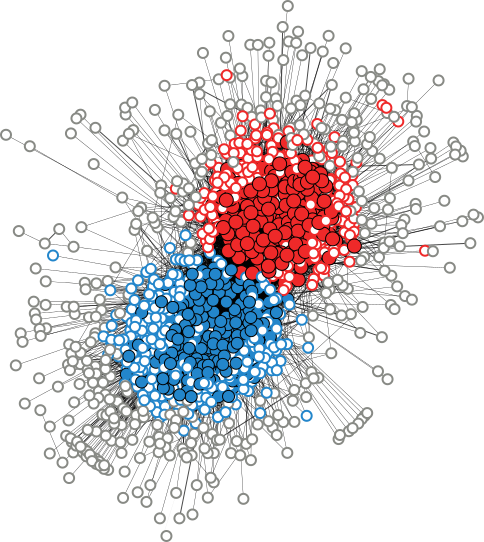

ネットワークの「コア」と「ペリ」
キーワード：ネットワーク，核，データ解析，アルゴリズム
コア・ペリフェリー構造とは、ネットワークがコア（核）と呼ばれるノード群と、ペリフェリー（周囲。以下「ペリ」と呼ぶ）と呼ばれるノード群に分けられる、という考え方である。コアに属するノード達は、お互いに高い枝密度で結びついている。ペリに属するノード達は、お互いに低い枝密度でしか結びついていない（そして、コアに属するノードにはそれなりの枝密度でつながっている）。コア・ペリ構造は、それを検出するアルゴリズムの提案と並行して、様々なネットワークで見つけられてきた。ただ、大抵の場合、与えられたネットワークが1つのコアと1つのペリだけから成ることを仮定していた。
我々は、与えられたネットワークに対して複数のコア・ペリ構造を検出するアルゴリズムを開発した [Kojaku & Masuda, PRE (2018)]。例えば、アメリカの政治についてのブログ・ネットワークに本アルゴリズムを適用すると、2つのコア・ペリ構造が検出され、1つのコア・ペリ構造は保守党的なブログのグループ（下図で赤色の丸で示したブログ）、もう1つは自由民主党的なブログのグループ（青色）に対応していた。本アルゴリズムやその変形版を銀行間の貸し借り関係のネットワーク [Kojaku et al., J Netw Th in Finance (2018)]、海運交通のネットワーク [Kojaku et al., arXiv (2018)]、テキストの分類問題 [Cui et al., *SEM 2018] に応用した。
 |
|
| 図：ブログ・ネットワークのコア・ペリ構造。頂点（丸）はブログ。塗りつぶした丸は、コアに属するノード（ブログ）。中抜きの赤や青の丸は、ペリに属するノード。灰色の丸は、どちらにも属さないノード。ブログ・ネットワークのデータは Adamic & Glance (2005)より。 | |
もし単に次数（ノードが持つ枝の数。友人ネットワークなら友達数）が大きいノードがコアに属して、次数が小さいノードがペリに属するだけならば、コア・ペリ構造なる複雑な概念を持ち出さずに、次数の大小だけで話が済んでしまうはずである。我々は、コアを1つ、ペリを1つだけ仮定する場合は、どんなネットワークについても次数の大小だけで話が済んでしまうことを明らかにした。次数の大小だけで話が済まずにコア・ペリ構造の解析が意味を持つためには、少なくとも3個のノード群が必要なのだ。コアとペリが1つずつだけならば、ノード群は2つなので条件を満たさない。一方、例えば、ネットワークの中にコア・ペリ構造が2つあるならば、ノード群は4つということになり、次数の大小だけでは分からないコア・ペリ構造を調べていることになる。このような事情を勘案した第2のアルゴリズムを用いると、次数は小さいコア・ノードや、次数は大きいペリ・ノードを見つけることができる [Kojaku & Masuda, New J Phys (2018)]。